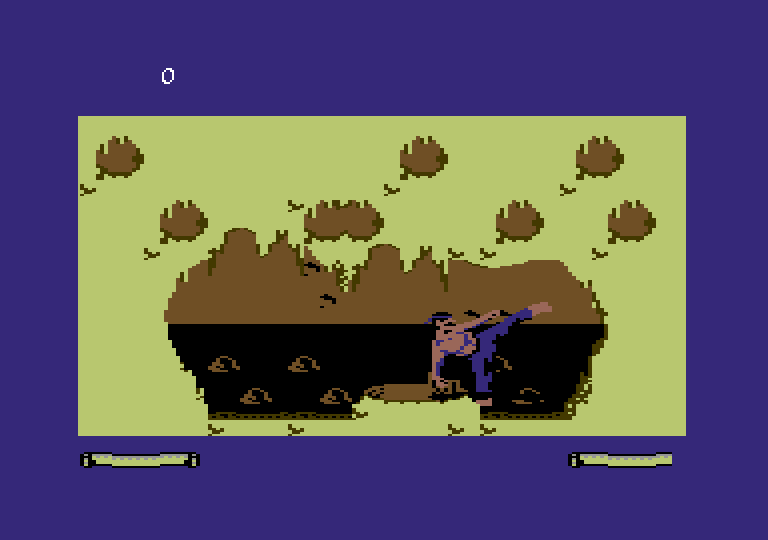
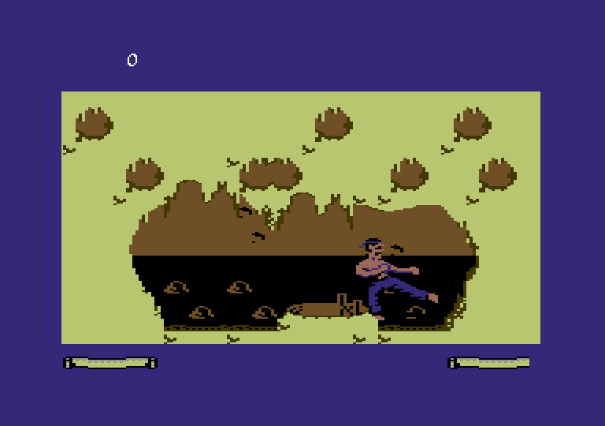

DEVLOG #9 · FIST II REMASTER
The kicks are back
· 2 min read

On 11 October I decided Fist II's eight attacks were too many, and we kept four. This week we built a room just to test them, and in it I found I missed the original's low and high kicks. So they're back!! YEHAA!!
A room with no enemies
First I wanted a quiet place to try the moves: one room, the player alone, and no enemy ever comes in. The same moves as in the level game, walking up and down the street,
and my joystick in port 2. Since then it's the room where we test every change to the attacks before it goes into the game.
We also put out a move map, one page with every direction of the stick. Most joysticks have one button, so the rule is simple: without fire the stick walks, with fire it picks an attack.

So what actually came back?
The stick's four diagonals, with the fire button pressed, are the original's again: forward and down is the low kick, back and down the backward low kick. Forward and up is the high kick, back and up the backward high kick. Both backward kicks hit whoever is standing behind you, without turning around.
Before, all the up diagonals did a flying kick, and I didn't like that. Now only up with fire is the flying kick, and it's still the attack that always knocks you down.
So there are eight attacks again, but not the same eight: fire on its own is a punch (in the original it did nothing), and down with fire is a punch instead of the leg sweep. And the enemies? They kept the original's eight attacks, as they were.
ATTACKS
4 → 8
Every direction with fire is a different attack, on one button
STICK + FIRE
9 / 9
Stick and fire combinations an automated test runs, checking the attack each one gives
Behind the scenes
The backward low kick crouches first and only then kicks, just like in the original. At first the automated test thought that was a bug, because the first move it saw was a crouch. And a test that throws every attack at real enemies found one low kick that hit from 12 pixels away. But the game itself has a rule that an attack only hits when the drawings touch, and under that rule all eight attacks touched, 2 pixels at the farthest.
What's next
Play with these attacks against enemies, and see if eight is exactly right.